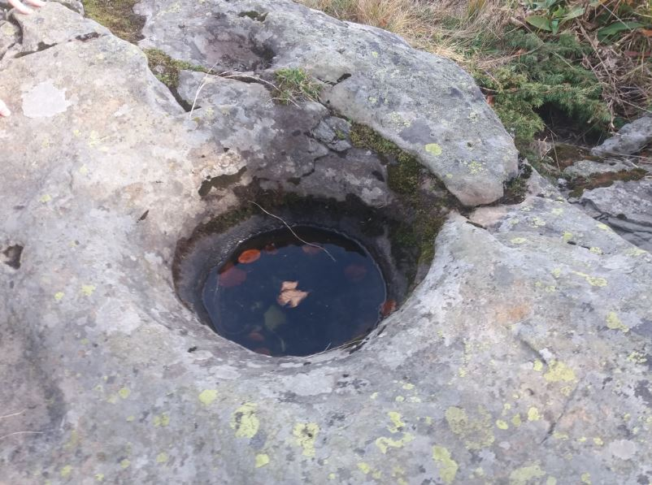

La marmitta
La marmitta è una particolare forma di erosione fluviale, ovvero una cavità scavata nella roccia dall’azione di acque vorticose che trascinano piccoli frammenti di pietra, sabbia e ciottoli strappati dalle rive o dal tratto fluviale a monte e che vengono scagliati con forza contro la parete rocciosa e fungono da abrasivi. Sono spesso presenti là dove un tempo c’erano ghiacciai e quindi torrenti impetuosi di origine glaciale durante la stagione più calda. Frequenti e molto evidenti nelle rocce calcaree, si possono formare anche in altri tipi di roccia come in questo caso nell’arenaria.